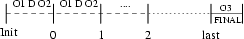

Last update: $Date$
Introduction
This tutorial is aimed to give you a step by step guide to build from
scratch a new peersim application (
http://sourceforge.net/projects/peersim):
a framework to experiment with large scale P2P overlay
networks.
In this tutorial it supposed that you and/or your workstation have:
- knowledge of O.O. programming and Java language
- a working Java compiler ( >= JDK 1.2)
- a working peersim source tree (you can download it from
sourceforge CVS)
- (suggested) gnuplot software
The aim of this tutorial is to be as pratical as possible; the goal is
to give the reader the basics of peersim usage and the basics about
howto write a simple component. This tutorial IS NOT exhaustive at all!
Introduction to Peersim
Why peersim
One of the P2P system properties is that they can be extremely
large scale (millions of nodes!); another issue to deal with, is the
high dinamicity of such
systems: nodes in the network join and leave continously. Setting up a
protocol experiments in a such simulated environent it's not an easy
task at all!
Peersim has been developed to cope with these P2P properties and thus
to reach extreme scalability and to support dynamicity. In addition,
the simulator structure is based on components and makes easy to fast
prototype
a simulation joining toghether different pluggable building blocks. The
term "components" used here has no relation with high level component
architectures (e.g.: CORBA, DOM+).
The peersim performances can be reached only assuming some relaxing
assumpions about the simulation details. For example, the overhead
introduced by the low level communication protocol stack (e.g.: TCP or
UDP) in not taken into account because of the huge additional memory
and cpu time requiremets needed to accomplish this task. Another
simplifying assumption is the obsence of concurrency: in peersim the
simulation is sequential and based on the concept of cycle in which
every node can select a neighbor (the neighborhood relation could be
defined by a fixed topology or defined by an overlay managenent
protocol such as
newscast)
and perform a protocol defined function.
Peersim simulation lifecycle
The peersim structure is aimed to promote modular programming
of building
blocks. Every such block is easily replaceable by another component
having a similar function, that means, in brief, having the same
interface. In the peersim framework, a simulation is carried by the
Simulator class. The general idea
of the simulation model is:
- choose a nework size (number of nodes);
- choose 1 or more protocol to experiment with and eventually
initialize
the protocol(s); this step will build a topology on top of raw nodes
inserted at the previous point;
- choose 1 or more Observer
object to monitor what you are interested in;
- optionally, choose 1 or more Dynamics
object to modify during execution the parameters of the simulation
(e.g.: the size of the network, update particular values inside
protocols, ...);
- ... run your simulation invoking the Simulator class
This is a very general model to give the reader an idea to start with,
but it can be extremely more complex.
All the object created during the simulation are instances of classes
that implements one or more well defined framework interfaces. The main
interfaces I suggest you to become familiar with are the following:
| Node |
All the elements of a P2P
network are called nodes, the interface manages the local view of
neighbor, the reference to the protocol, its index identifier inside
the topology global array (invisible to protocols)
|
| CDProtocol,
Protocol |
A protocol simply defines an
operation to be performed at each cycle (only method nextCycle() is defined)
|
| Linkable |
A class implementing this
interface has access to the underling network: can access to its local
view of neighbor
|
| Observer |
Objects running at
each cycle collecting data about the current simulation state
|
| Dynamics |
Objects running at each cycle
modifing values of other objects
|
| Initializer |
Objects running only once before
starting the simulation itself
|
The lifecycle of a peersim simulation is defined inside the
Simulator
class. It first reads a particular configuration file (
about configuration file) containing all the
simulation parameters concerning all the objects involved in the
experiment. If no error occurs, the requested objects are created (all
the nodes making the overlay connected with one or more protocol
object, the
Initializer,
Observer,
Dynamics objects), the
Initializers objects (if any) are
created and executed to actually initialize.
Once the initalization phase is completed, the simulation starts.
The way the simulator manages the interactions between the protocol(s)
run, the
Observer object(s)
and the
Dynamics object(s) in
each cycle can be quite sophisticated. Each
Observer and
Dynamics object is wrapped into a
Scheduler class which adds fine
grained scheduling facilities to their run.
Before executing the protocol code, the simulator runs the
Dynamics and
Observer object(s), but the
developer can choose and define the execution order of these components
and the cycle interval to work in. For example, as depicted in Figure
1, we can choose to run one or more
Observer
object before and/or one or more
Observer
objects after the
Dynamics
object(s).
Nevertheless, also after the last cycle we can choose to run an
Observer to retreive a final
snapshot.

Figure 1: Observer and Dynamics scheduling
In the figure, O1,2,3 are
Observer
components and D represents one or more
Dynamics objects. Please note that
before the first protocol run a first
Dynamics
and
Observer run is performed
(depicted in the interval between init and cycle 0).
The snapshots taken by the
Observer
objects are sent to
standard output and can be easily redirected to a file to be collected
for further work. Nevertheless, a developer can write
Observer objects with a GUI or with
database connection to store data directly or whatever.
The config file
The understanding and the writing af a configuration file is the
trickyest part of peersim (as stated by most users!) and it's harder
than writing a new protocol code!
Well, the configuration itself at least on the average case, it is not
so difficult, but needs a little bit of attention and practice.
The config file is a plain ASCII text file, basically composed of
key-value pairs; the lines starting with "#" character are
ignored (comments). The pairs are collected by a standard Java
java.util.Properties object when
the Simulator starts using for example the following command:
$> java -cp <class-path> peersim/cdsim/Simulator
config-file.txt
Clearly the classpath is mandatory only if you haven't set it yet in a
global shell variable.
Because of the spiritus of this tutorial, we'll try to learn peersim
configuration using a by example metodology.
Configuration example 1
First of all, what we are going to do in this first experiment?
We are going to impose a fixed P2P random topology composed by 50000
node network; the choosen protocol is
aggregation
(
what is aggregation?) using an average
function. The values to be aggregated (averaged) at each node are
initialized using a linear distribution on the interval [0, 100].
Finally an
Observer monitors
the averaging values. Looks easy!!
1 # PEERSIM EXAMPLE 1
2 # random.seed
1234567890
3 simulation.cycles 30
4 simulation.shuffle
5
6 overlay.size 50000
7 overlay.maxsize 100000
8
9 protocol.0
peersim.core.IdleProtocol
10 protocol.0.degree 20
11
12 protocol.1
example.aggregation.AverageFunction
13 protocol.1.linkable 0
14
15 init.0
peersim.init.WireRegularRandom
16 init.0.protocol 0
17 init.0.degree 20
18
19 init.1
example.loadbalance.LinearDistributionInitializer
20 init.1.protocol 1
21 init.1.max 100
22 init.1.min 1
23
24 observer.0
example.aggregation.AverageObserver
25 observer.0.protocol 1
Lets comment the code line by line.
The first thing to node are the key
names: some of them are indexed and some other not (e.g. protocol.0.xxx
versus simulation.<parameter>). That means the unindexed keys
refers to static simulation elements, in fact the simulation itself is
one and the same holds for the P2P network: only one network!
For the other simulation components you can think about the existance
of a dedicated array for each of their type (one for protocols,
initailizer, ...); the index is the only reference to deal with them.
So the key for indexed components can be (informally) expressed as:
<init | protocol | observer | dynamics> . index_number [.
<parameter_name>]
The final <parameter_name> is contained between [] to express
that it can be not present. This is the case when the element is
declared. For example, at line 9, the first protocol choosen comes to
life; the
key part contains
its type (or interface type) followed by the index (always starting
from 0, as in arrays) and the
value
part contains the desired component
class full package path (you have to check the javadoc files or the
source tree to
discover the correct package path).
In the case of a component parameter declaration, the
key part contains the parameter name
and the
value part is simply
the value desired (usually an integer or a float).
At this point, should be clear that from
line 3 to line 7 some global
simulation properties are imposed; these are the total number of
simulation cycles and the overlay network size. The
parameter
simulation.shuffle
(
line 4) it is a little
different from what we have stated until now; it is used as a flag, so
it does not need a parameter. Its job is to shuffle the order in which
the nodes are visited in each cycle. The parameter
overlay.maxsize (
line7) sets an upper bound on the
network size, but in this example it is useless (you can comment it
out) and it's only present for sake of completeness (will be
useful next).
From
line 9 to line 13, two
protocols are put in the arena. The first one,
peersim.core.IdleProtocol does nothing! It is useful because of its
ability to access to the topology, in fact it provides neighbour links
to each node. This feature is present because
IdleProtocol is an implementation
of the
Linkable interface.
Next line declares the graph degree.
The second protocol (index 1:
protocol.1
aggregation.AverageFunction) is the averaging version of
aggregation. Its parameter (
linkable)
is extremely important: it expresses the need to access the
topology using not this protocol itself
(aggregation). This is due to the structure of aggregation:
it does not implement the
Linkable
interface, so it can't see the neighbor list by itself and it must use
some other protocol to do that. The value of parameter
linkable is the index of a
Linkable interface implementing
protocol (
IdleProtocol in the
example).
Clearly to know if a protocol can get access to the topology directly,
you have to check the documentation (or source code!).
From
line 15 to line 22, it's
time to initialize all the components previously declared. Again, the
initialization components are 2 and are indexed as usual. The first
initializer
peersim.init.WireRegularRandom,
imposes a topology. The nodes using the declared
protocol are linked randomly to
aechother to form a random graph having the specified
degree parameter. Please note
that this degree
declaration is exactly the same of the previous (the one dedicated to
the first protocol creation).
The second initializer task is to initialize the aggregation function
value-field to be averaged. The initialization values follows a linear
distribution fashion. The parameters declared are three:
protocol, max, min. Respectively, their
meaning is:
- a protocol to point to: the initializer needs a reference (index)
to a protocol extending aggregation.AbstractFunction
Class to get access to the value to be aggregated (averaged); it
is clear that this protocol must be aggregation.AverageFunction (index
1);
- the maximum value in the linear distribution;
- the minimum value in the linear distribution
Finally at
line 24,25 the last
component is declared:
aggregation.averageObserver.
Its only parameter used is
protocol
and clearly refers to an
aggregation.AverageFunction
protocol type, so the parameter value is index
1 (in fact:
protocol.1 aggregationAverageFunction).
Now you can try the example writing on a console the following line:
$> java -cp <class-path> peersim/cdsim/Simulator
example1.txt
The classpath is mandatory only if the used system has not peersim
classes in the shell CLASSPATH environment variable.
To get the exact output that will follow, the reader should uncomment
the
parameter at
line 2:
random.seed
1234567890
on top of the configuration file. This parameter is very useful to
replicate exactly the experiments results based on (pseudo) random
behaviour.
The experiment output is (some initialization string may be different):
Simulator: loading configuration
ConfigProperties: File example/config-example1.txt loaded.
Simulator: starting experiment 0
Simulator: resetting overlay network
Network: no node defined, using GeneralNode
Simulator: running initializers
- Running initializer 0: class peersim.init.WireRegularRandom
- Running initializer 1: class
example.loadbalance.LinearDistributionInitializer
Simulator: loaded observers [observer.0]
Simulator: loaded modifiers []
Simulator: starting simulation
observer.0 0 28.57969570575493 1.0 50.49999999999998 100.0 1.0 50000
50000
Simulator: cycle 0 done
observer.0 1 15.744375112466432 0.5508937280006126 50.500000000000185
99.64260285205704 1.993979879597592 50000 50000
Simulator: cycle 1 done
observer.0 2 8.77307045667709 0.3069686446980087 50.50000000000009
86.06868887377748 11.048700974019479 50000 50000
Simulator: cycle 2 done
observer.0 3 4.909681896225926 0.17178915922597776 50.499999999999794
74.03587220181905 22.769780085543115 50000 50000
Simulator: cycle 3 done
observer.0 4 2.7403309556342257 0.09588383948687113 50.500000000000426
65.43171163227953 33.427798365537626 50000 50000
Simulator: cycle 4 done
observer.0 5 1.538286672869342 0.053824459459153234 50.49999999999973
59.82515640226745 42.62594413722992 50000 50000
Simulator: cycle 5 done
observer.0 6 0.866397905938638 0.03031515502679675 50.50000000000007
55.26130498088358 45.94325388089578 50000 50000
Simulator: cycle 6 done
observer.0 7 0.485544546348093 0.016989143318636584 50.4999999999996
53.34350686753126 47.92146780934889 50000 50000
Simulator: cycle 7 done
observer.0 8 0.27325943590085566 0.009561313693267594
50.499999999999936 51.953084686348944 49.100818456230826 50000 50000
Simulator: cycle 8 done
observer.0 9 0.15407802503043988 0.005391170942362905
50.499999999999545 51.464657035213264 49.43879802069546 50000 50000
Simulator: cycle 9 done
observer.0 10 0.08620333588583261 0.0030162440067013846
50.500000000000156 51.099961126584006 49.98131655222747 50000 50000
Simulator: cycle 10 done
observer.0 11 0.04848730705794467 0.0016965648464962858
50.4999999999997 50.816956855036466 50.22577832539035 50000 50000
Simulator: cycle 11 done
observer.0 12 0.027214744249562235 9.522405182250473E-4
50.499999999999524 50.65301253758219
50.29955826845794 50000 50000
Simulator: cycle 12 done
observer.0 13 0.015246845383671713 5.334852246380476E-4
50.50000000000032 50.59479421528527 50.38736504947625 50000 50000
Simulator: cycle 13 done
observer.0 14 0.008587160488627146 3.004636780264248E-4
50.499999999999815 50.543660258997136 50.44122418780829 50000 50000
Simulator: cycle 14 done
observer.0 15 0.004850437249792671 1.697161964119851E-4
50.50000000000037 50.52544970665122 50.46753516145482 50000 50000
Simulator: cycle 15 done
observer.0 16 0.0027428141606463717 9.59707265215587E-5
50.50000000000047 50.515509548126744 50.48203242786418 50000 50000
Simulator: cycle 16 done
observer.0 17 0.001550607390364058 5.4255559832703925E-5
50.4999999999997 50.50982384430303 50.49003444731606 50000 50000
Simulator: cycle 17 done
observer.0 18 8.746858998689715E-4 3.0605150904137896E-5
50.5000000000003 50.50564226243819 50.495105203016905 50000 50000
Simulator: cycle 18 done
The observer component produces many numbers, but looking at 6th and
7th data columns (respectively the maximum of averages and the minimum
of averages) it's easy to see how the variance decreases very quickly.
At cicle 12 (look at the underlined data), quite all the nodes has a
very good approximation of the real average (50).
Try to experiment with different numbers and then to change the init
distribution (e.g.: using
aggregation.PeakDistributionInitializer)
and / or the protocol stack (put
Newscast
or
SCAMP instead of
IdleProtocol).
Configuration example 2
This second example is an improved version of the first one. What's
new? Now the aggregation protocol runs on top of Newscast and it's easy
to switch to the peak distribution (comment 4 lines and uncomment 2
lines). Moreover, there is a Dynamics object that changes the network
size (it shrinks it by cutting out 500 nodes each time).
1 simulation.cycles 30
2 simulation.shuffle
3
4 overlay.size 50000
5 overlay.maxsize 200000
6
7 protocol.0
example.newscast.SimpleNewscast
8 protocol.0.cache 20
9
10 protocol.1
example.aggregation.AverageFunction
11 protocol.1.linkable 0
12
13 init.0
peersim.init.WireRegularRandom
14 init.0.protocol 0
15 init.0.degree 20
16
17 #init.1
example.aggregation.PeakDistributionInitializer
18 #init.1.value 1
19 init.1
example.loadbalance.LinearDistributionInitializer
20 init.1.protocol 1
21 init.1.max 100
22 init.1.min 1
23
24 observer.0
example.aggregation.AverageObserver
25 observer.0.protocol 1
26
27 dynamics.0
peersim.dynamics.GrowingNetwork
28 dynamics.0.add -500
29 dynamics.0.minsize 4000
30 dynamics.0.from 5
31 dynamics.0.until 10
The global parameters are the same as in the previous example; only new
additions are discussed below.
At
line 7-8 there is the
Newscast (
what
is newscast?) component declaration with
its only parameter
cache
(plese note: cache size should be at least as large as network degree
size). At
line 17-18 there is
a different distribution type:
aggregation.PeakDistributionInitializer,
but it's inactive. To switch it on, simply delete the preceeding simbol
"#" and comment out the following 4 lines. The peak distribution
initializes all nodes except one with 0 value and the node left takes
the value declared in parameter
value.
From
line 27 to 32 is present
the last new component:
dynamics.0
peersim.dynamics.GrowingNetwork. As stated previously, a
Dynamics interface
implementing object is able to change some other object properties; the
change can be performed at each simulation cycle (default behaviour) or
using a more sophisticated idea. The object choosen in the example
deletes 500 nodes from the net at each time (well, it is not completely
correct to talk about deletion in the peersim vision, in fact the
Linkable interface does not support
node deletion from the overlay; so it's better to think about
"unlinking" nodes from the overlay). The parameters
add, minsize, from and
until have respectively the
following meaning:
- adds the specified number of nodes (if negative subracts);
- the minimum size ir referred to the overlay: it can't be less
than what's stated here
- the cycle number from which the Dynamics
object can start running
- the cycle number until which the Dynamics object can run
Other parameters are avaiable, please check the source!
It's interesting to note that not all the parameters associated to a
Dynamics component can be found in
the
Dynamics itself source
code (or documentation); this is due to the Simulator class behaviour.
When it creates the
Dynamics
object instances (this hold also for
Initializer
and
Observer objects), it
wraps them in a
Scheduler
class object: this is the class where some parameters (such as
step,
from,
until) are actually defined.
Writing a new protocol
This section covers the description of how to write a new
protocol.
Which kind of protocol?
The protocol we are going to develop is a simple load balancing
algorithm. It works as follows. The state of a node is composed of two
values: the local load and the quota; the second one is the amount of
"load" the node is allowed to transfer at each cycle. The quota is
necessary in order to make real load balancing, otherwise it would be
simply averaging. Every node contacts the most
distant neighbor in its local view
and then exchanges at maximum the quota value. The concept of
"distance" is expressed in terms of maximally different load from
the current node local load. Comparing the distance to the actual node
load, the protocol chooses to perform a load balance step using a push
or pull approach.
After each cycle, the quota value is restored to allow further
computation.
The protocol does not care about topology management and relies on
other components to get access to this feature (e.g.: Newscast,
IdleProtocol).
Needed components
Now we have a general idea on what we want to code and it's time to
adapt it to the peersim framework. Writing a the protocol class itselt,
it is usually not sufficient. Some companion components are required.
For example, to restore the quota value for each node at the end of
each cycle, a specific
Dynamics
object is required.
Peersim is basically a collection of interchangeable components, so the
development of new stuff should have
modularity
in mind and should maximize code reuse. To acheive this, the following
classes are proposed:
- protocol class itself: it is built on (extends) aggregation.AbstractFunction; this
strategy permits the reuse of the aggregation protocol "value" field
and related methods to store the load value. Sharing the same interface
as aggregation, many other components can be used toghether with the
load balancing protocol, such as the initializers classes.
- Dynamics component: it is necessary to restore the quota value at
each node at the end of each cycle (as previously stated). This object
is quite straighforward: it simply implements the only one method the
interface Dynamics declares,
invoking the protected protocol method resetQuota().
- Initializer and Observer components: are not needed! The
aggregation initializers can be used directly. Also the aggregation
observers can be used (the aggregation.AverageObserver
in particular). In addition a new observer object can be written to
monitor the quota parameter and thus the amount of traffic performed in
the overlay.
To give the reader an idea about the actual code to write, the
following subsections are presented, in which the author put comments
and explanations in the way of the class code itself.
Load balancing protocol class code
package loadbalance;
import peersim.util.CommonRandom;
import
aggregation.AbstractFunction;
import
peersim.config.Configuration;
import peersim.core.*;
public class BasicBalance extends
AbstractFunction {
// Fields:
public static final String
PAR_QUOTA = "quota"; // allowed config file parameter
private final double quota_value;
// original quota value taken from configuration
protected double quota; //
current cycle quota
// Constructor:
public BasicBalance(String
prefix, Object obj) {
super(prefix,
obj);
// get quota value from the config file. Default 1.
quota_value = (double)(Configuration.getInt(prefix+"."+PAR_QUOTA, 1));
quota =
quota_value;
}
It's simply standard Java code until now; the package
loadbalance and the needed
classes are declared. Extending
AbstractFunction,
we implements
CDProtocol
and
Protocol interfaces
automagically, but
we need to override the previously defined methods to avoid using the
AbstractFunction implementation!
In the constructor signature, two parameters are present; the first one
is a string corrisponding to the configuration file protocol key (e.g.:
protocol.1 in the
LoadBalance
protocol case), the second one is the protocol id index casted in a
Object type. These parameters are
used in the superclass (
aggregation.AbstractFunction)
to connect this class to a
Likable
implementing protocol class. As an example, the
aggregation.AbstractFunction
constructor class it's presented:
public AbstractFunction(String prefix, Object obj) {
int protocolId = ((Integer) obj).intValue();
int link = Configuration.getInt(prefix+"."+PAR_CONN);
Protocols.setLink(protocolId, link);
}
The static class
Protocols
collects protocol id-s of the protocols from which instances of this
class get neighborhood info.
The
protocolID variable
represents the current class and the
link
variable index is the
Linkable
enabled protocol stated in the configuration file (
linkable parameter).
// Resets the quota.
protected void resetQuota() {
this.quota =
quota_value;
}
The
resetQuota()
method is called
by the dynamics object at the cycle end. Clearly a suitable
dynamics entry should be
present in the configuration file (such as:
dynamics.0 loadbalance.ResetQuota
and
dynamics.0.protocol
protocol-index). This method is not mandatory, but it's much
more software engineering oriented then a dirty variable access
performed by the dynamics object.
// Implements the Protocol
interface
public Object clone() throws
CloneNotSupportedException {
BasicBalance
af = (BasicBalance)super.clone();
return af;
}
// Implements CDProtocol interface
public void nextCycle( Node node,
int protocolID ) {
int linkableID
= Protocols.getLink(protocolID);
Linkable
linkable = (Linkable) node.getProtocol( linkableID );
if (this.quota
== 0) {
return; // skip this node
}
// this takes
the most distant neighbor based on local load
BasicBalance
neighbor = null;
double maxdiff
= 0;
for(int i = 0;
i < linkable.degree() ; ++i)
{
Node peer = linkable.getNeighbor(i);
// The selected peer could be
inactive
if(!peer.isUp()) continue;
BasicBalance n =
(BasicBalance)peer.getProtocol(protocolID);
if(n.quota!=1.0) continue;
double d = Math.abs(value-n.value);
if( d > maxdiff )
{
neighbor = n;
maxdiff = d;
}
}
if( neighbor
== null ) {
return;
}
doTransfer(neighbor);
}
The first method is required by the
Protocol
interface and basically
calls the ancestor cloning method. So, nothing special here.
The second one is required by
CDProtocol
interface. It is the action
performed by the protocol. The arguments represents a reference to the
node itself (the node on which the simulator is invoking the
nextCycle() method) and the index
protocol identifier (
BasicBalance
in this case). First it has to get a reference (in indexed form) to the
Linkable interface enabled
protocol in the node protocol stack; as a remind, something
implementing the
Linkable
interface, is an entity capable of accessing to the topology.
Having this linkable reference (index) we can access to the real
Linkable interface
implementation with:
Linkable
linkable = (Linkable) node.getProtocol( linkableID );
If the local quota is equal to 0, means that the node we have already
spent its amount of network traffic, so it returns.
To get the most distant node from the current one, a for loops on all
neighbor node load value; the number of neighbor is equal to the node
degree (aceesible thanks to
Linkable
interface). To pick a node having a the
Linkable access:
Node
peer = linkable.getNeighbor(i);
and from this obtained
Node
interface reference it is possible
to get the protocol interface we are interested in (
BasicBalance):
BasicBalance n =
(BasicBalance)peer.getProtocol(protocolID);
When the protocol finds a suitable neighbor, it performs a load
balancing step invoking the
doTransfer()
method.
// Performs the actual
load
exchange selecting to make a PUSH or PULL approach.
// It affects the involved nodes
quota.
protected void
doTransfer(BasicBalance neighbor) {
double a1 =
this.value;
double a2 =
neighbor.value;
double
maxTrans = Math.abs((a1-a2)/2);
double trans =
Math.min(maxTrans,quota);
trans =
Math.min(trans, neighbor.quota);
if( a1 <=
a2 ) // PULL
{
a1+=trans;
a2-=trans;
}
else // PUSH
{
a1-=trans;
a2+=trans;
}
this.value =
a1;
this.quota -=
trans;
neighbor.value
= a2;
neighbor.quota
-= trans;
}
The last method takes as parameter a reference to the picked neighbor.
This is the place where it's time to decide to perform a pull or a push
load balancing approach. To make this choice the local load value is
compared with the neighbor load value. In case of a push choice,
the
local value is increased and the other node value is decresed; in the
other case (pull) the exact opposite holds. The
maxTrans variable is the absolute
amount of "load" to transfer to reach the balance between the two
involved nodes; because of the quota upper bound on the transfers at
each cycle, the algorithm chooses the minimum between the quota itself
and the aimed
maxTrans
amount. The quota value is
decreased by the same amount at both nodes.
Load balancing dynamics class code
package loadbalance;
import peersim.config.*;
import peersim.core.*;
import peersim.dynamics.Dynamics;
public class ResetQuota
implements Dynamics {
// Fields:
public static final String
PAR_VALUE = "value";
public static final String
PAR_PROT = "protocol";
private final double value;
private final int protocolID;
// Constructor:
public ResetQuota(String prefix)
{
value =
Configuration.getDouble(prefix+"."+PAR_VALUE);
protocolID =
Configuration.getInt(prefix+"."+PAR_PROT);
}
// Dynamics interface method:
public void modify() {
for(int i=0; i
< OverlayNetwork.size(); ++i)
{
((BasicBalance)OverlayNetwork.get(i).getProtocol(protocolID)).resetQuota();
}
}
}
The code is very compact because the
Dynamics
interface itself is very simple: only the modify() method. The
costructor takes care of initializing the configuration file parameters
(respectively: the reset value and the protocol index to deal with).
The modify() method makes use of network global knowledge: it invokes
the
resetQuota() method on
all the
OverlayNetwork object
elements (it's a static object avaiable everywhere in the simulator
environment; you can think about it as an array).
It is clear that the simulator has global knowledge, but it is up to
the protocol developer to make use or not of this facility according to
the consistency of the simulation itself.
Implementing the Linkable interface
In this howto there are a lot of references about the Linkable
interface and about its importance, so for the sake of completeness,
it's time to give a look at how to implement it in brief. It's
interesting to node that this interface should be implemented by low
level or by topology management protocols and not by a higher level
protocol such as a load balancing one. The reason to discurage the
implementation is the risk to affect modularity. At least, the reader
should consider the ability to switch off the built in
Linkable interface and to use an
external protocol facility instead.
The interface defines five methods:
degree(),
getNeighbor(),
addNeighbor(),
contains(),
pack(). These methods are not
usually invoked by the protocol itself (except for
getNeighbor() ), but by an
Initializer object instead. Please note that there is no way to remove
nodes from the overlay; the only chance to get a similar effect, is to
disable a peer accessing to the
peersim.core.Fallible
interface (extended by the
Node
interface) and setting one of the available node states (
peersim.core.Fallible.OK|DEAD|MALICIUS|DOWN).
A feasible implementation could be the following.
First of all, the class (e.g.:
BasicBalance)
needs a structure to represent the neighbor view: an
ArrayList structure it's fine.
protected ArrayList nView = null;
// Constructor: